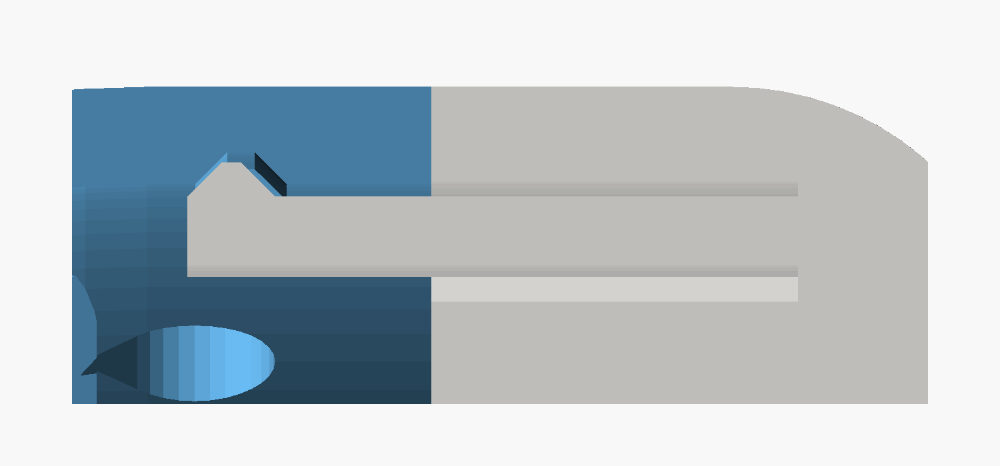
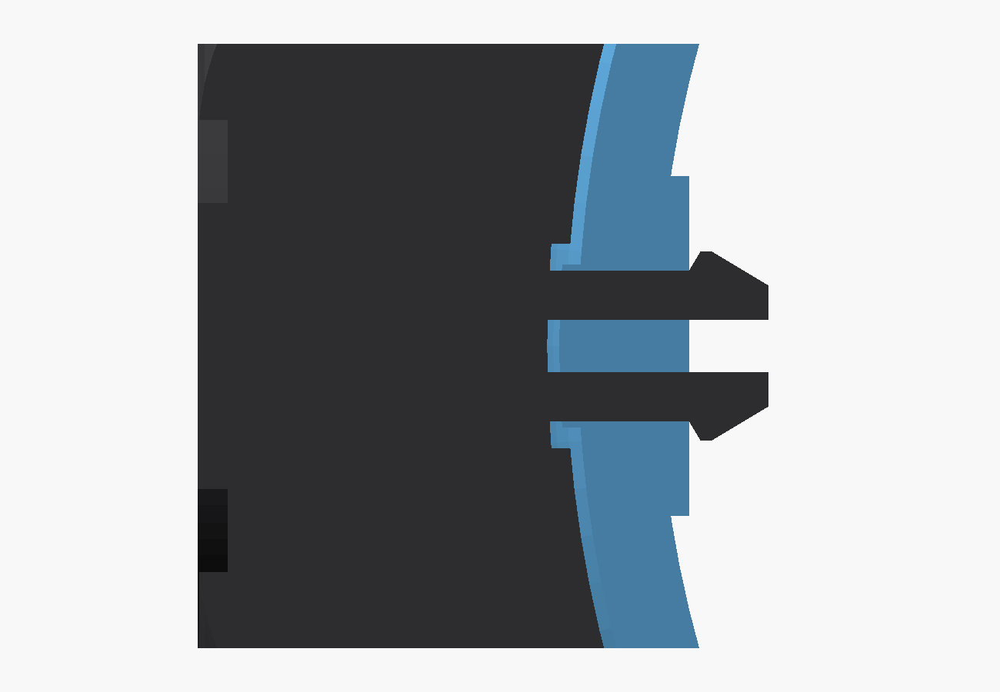
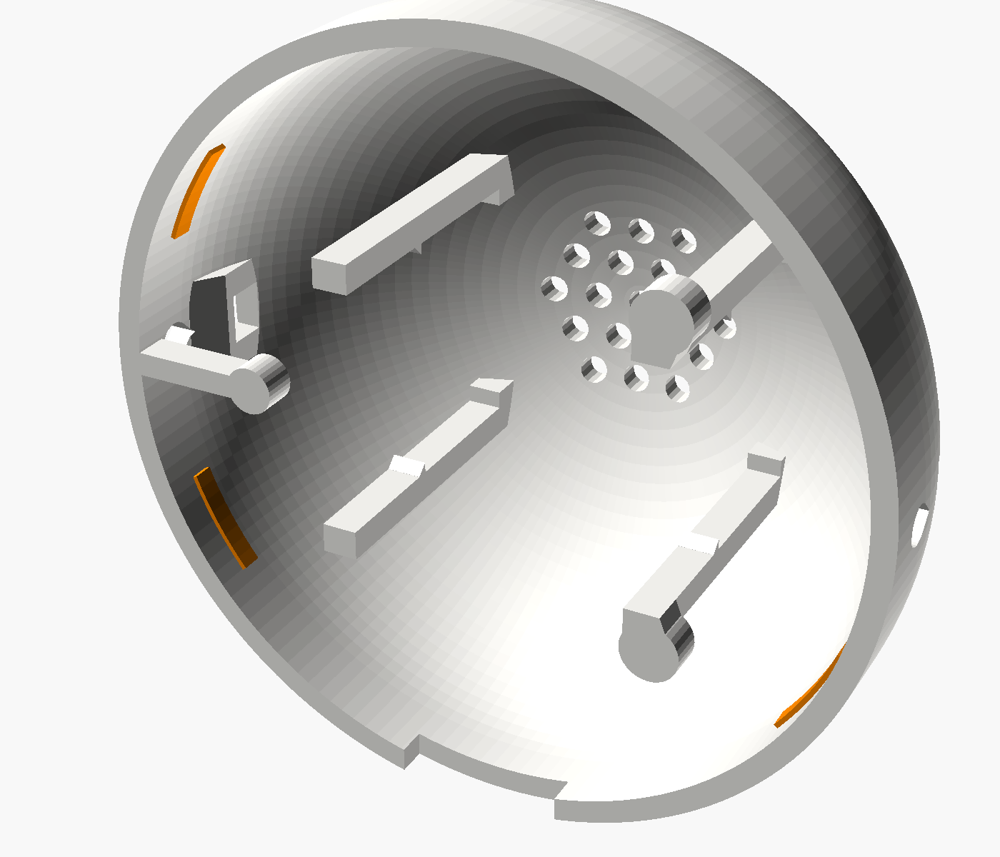
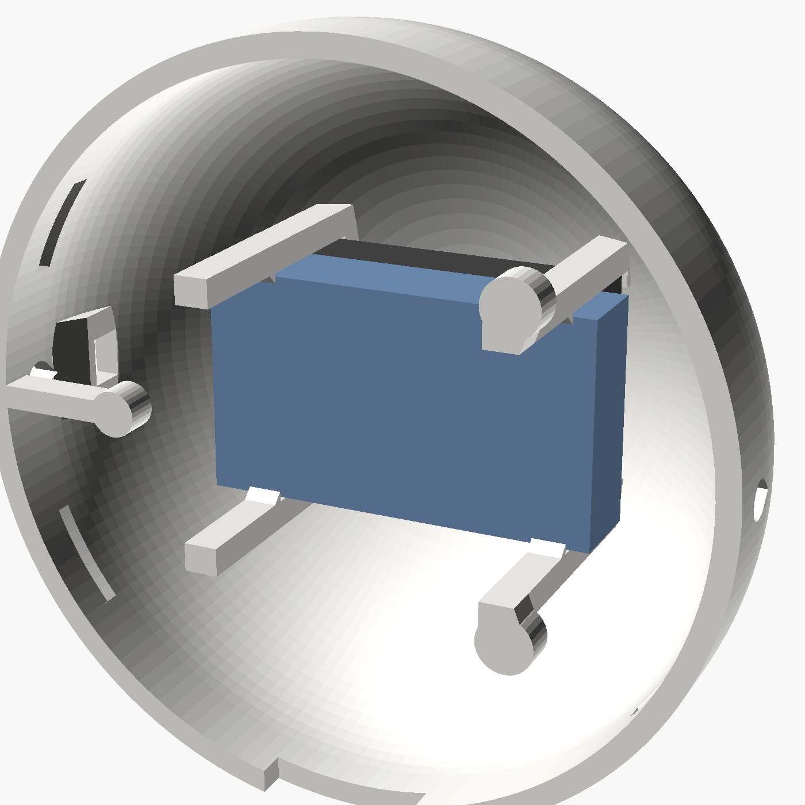
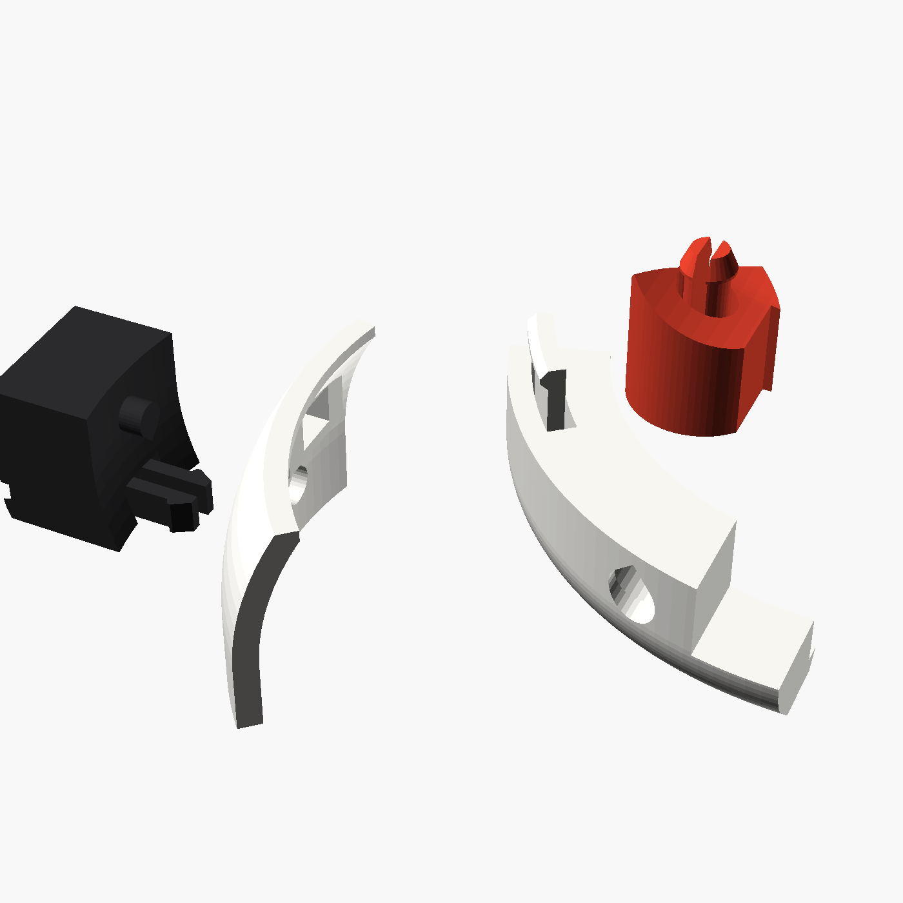

How it clips together
Every joint is a printed clip or peg. Nothing is glued, so you can take it all apart again to unplug the battery or reflash the board.
| Joint | How it works | To take it apart |
|---|---|---|
| Head front ↔ head back | 4 snap hooks on the head front each click into their own pocket inside the rim of the head back. The pockets also stop the head back turning. | Pull the halves apart firmly, one side at a time |
| Board | Clamped between the bezel lip and three pads on the head back that press on its brass posts | Opens with the head |
| PWR and BOOT buttons | Trapped by their wide ends between the board and the head front | Fall out when the board is out |
| Speaker | Pushed in to the frame in the head back until it stops on 4 ledges | Take the battery out, then slide it out |
| Battery | Clicks past 4 catches on the frame, and holds the speaker in place | Ease the catches outwards with a fingernail |
| Headphones | A split clip on each ear cup springs open behind the wall of the head back. A pin beside it stops the headphones rocking. | Pull one cup straight out, firmly |
| Head on body | 2 split, barbed pegs standing in the collar click into sockets under the head. It stays on when the robot is upside down. | Pull straight up, firmly |
| Backpack | 2 split, barbed pegs click into the body's back | Pull firmly |



Battery
A single-cell lithium-polymer pouch battery. It clips into the head back, behind the board and in front of the speaker.
What to buy
- Type
- 3.7 V LiPo, 1 cell (1S)
- Capacity
- 500 mAh (1.85 Wh)
- Size code
- 752035 (7.5 × 20 × 35 mm)
- Plug
- MX1.25 2-pin (1.25 mm pitch)
- Protection
- Must have a built-in protection board (PCM)
- Search for
- 3.7V 500mAh lipo 752035 MX1.25
bat changed at the top of the model.Check the polarity before you plug it in
Sellers sometimes wire the plug backwards. A reversed battery can destroy the board's charging chip.
Charging
Through the board's USB-C while Beat Buddy sits on the desk. The board has its own charge chip, so no extra charger is needed.Run time
Roughly 2–4 hours away from the cable, depending on screen brightness and Wi-Fi use. This is an estimate until we measure it.Safety
Don't bend, puncture or squash the battery. It should slide into the frame with light pressure; if it needs force, stop and check its size.Shopping list
Nothing needs soldering: the battery and speaker plug straight into the board.
| Part | Qty | Search for | Notes |
|---|---|---|---|
| Waveshare ESP32-S3-Touch-AMOLED-1.75 | 1 | Waveshare ESP32-S3 1.75 AMOLED touch | Standard version, not "-G" (GPS). About C$35–45. |
| LiPo battery | 1 | 3.7V 500mAh lipo 752035 MX1.25 | See the battery section above |
| Speaker, 8 Ω 2 W | 1 | Comes with the board | Waveshare 2030 box speaker, 20 × 30 × 5.5 mm, already fitted with an MX1.25 plug |
| USB-C cable, straight plug | 1 | Any USB-C cable | The plug must be at most 13 mm wide, 8.5 mm thick and 24 mm long, counting the stiff part only. Most are about 12 × 6.5 × 22 mm. |
| PLA filament | 3 colours | White about 30 g · Black about 10 g · Red about 35 g |
What goes where
The head opens into two halves. The screen board sits in the front half behind the bezel, the battery and speaker clip into the back half, and the cable runs up through the body from the backpack.


| Component | Location | Held by |
|---|---|---|
| Screen board | Head front, glass facing out, USB-C pointing down | Clamped by three pads on the head back |
| PWR and BOOT buttons | Top edge of the head front, PWR on the left and BOOT on the right as you face the robot | Trapped by the board |
| Battery | Head back, behind the board, wires towards the board's battery socket | 4 catches |
| Speaker | Head back, behind the battery, cone facing the grille | 4 ledges and the battery |
| Headphones | Band around the back of the head, cups on the sides | 2 split clips and 2 pins |
| USB-C cable | In through the backpack, through the body, up the neck into the board | The channel in the body |
Wiring
There are only three plugs, and all of them go into sockets already on the board.
Assembly, step by step
Do the test in step 3 before you close the head. It's much easier to fix things while everything is still open.
Clean up the prints 5 min
Pull the supports out of the head back through its open side, and peel off any brim. Check that the four snap hooks, the two button slots, the two headphone windows and the slits in the split pegs are free of strings.Fit the buttons and the board Trapped
- Hold the head front screen side down. From the inside, push each T-shaped button out through one of the two small slots near the top, wide end inside. The wide end sits in a little recess.
- Peel any protective film off the glass. Hold both buttons pushed outwards and drop the board in, glass first, so it rests on the bezel lip.
- Turn it until the USB-C port is over the rectangular slot at the bottom. PWR and BOOT then sit right behind the two buttons. Press each button: you should feel the board's switch click.
Plug in the battery and speaker, then test No tools
- Check the battery polarity first (see the battery section above), then plug it into the battery socket.
- Plug the speaker into the speaker socket.
- Connect USB-C, flash the firmware, and check that the screen, touch and sound all work.
Clip in the speaker and the battery Clip
- Speaker first: push it into the frame of four columns inside the head back, cone first (the black side towards the grille), with its long side across the head. It stops against four small ledges.
- Battery: push it into the same frame behind the speaker, flat side first, until it clicks past the four catches. It holds the speaker in place.
- Fold the wires flat towards the board's sockets. Nothing should sit between the two halves of the head.

Close the head 4 snap hooks
Turn the head back so the notch at the bottom lines up with the USB-C slot. Press the halves together until all four hooks click into their pockets. The seam should close fully all round, and the head back should not turn. To open it again, pull the halves apart firmly, one side at a time.Fit the headphones 2 clips
Hold the headphones with the band behind the head. Push one cup's clip and pin into the slot and hole on one side of the head until it clicks. Then spread the band about 6 mm and click the other cup in the same way.Run the cable through the body Plug in
- Push the USB-C plug into the hole in the backpack and through it.
- Feed it into the matching opening in the body's back, then up and out of the top of the neck.
- Plug it into the board from below.
Clip the head onto the body, then the backpack 2 pegs 2 pegs
Lower the head onto the collar, pulling the spare cable back out through the body, so the plug drops into the neck channel. Press the head down until the two pegs in the collar click into the sockets under it. Turn the robot upside down to check: the head should stay on. Then push the backpack's two pegs into the holes in the body's back until they click. Done!Printing
Every part prints in one colour, in the orientation already set in the files. Only the head back needs supports.
- Body peg: push the head front corner (the piece with the round hole) down onto the peg. It should click, and need a firm pull to come off. Adjust
clip_barb. - Headphone clip: push the ear cup's clip through the square window in the thin strip, with the pin in the round hole. It should click and stay in when you shake it. Adjust
hp_clip_barb. - Head hook: stand the thin strip on the head front corner, with the hook inside it, and pinch them together. You should feel the hook's bump drop into its pocket. Adjust
hook_bump.

| File | Colour | Parts |
|---|---|---|
| beat_buddy_WHITE_plate.3mf | White | Head front, head back, 2 buttons |
| beat_buddy_BLACK_plate.3mf | Black | Headphones, backpack |
| beat_buddy_RED_plate.3mf | Red | Body |
| beat_buddy_ALL_PARTS.3mf | Any | All 7 parts on one plate |
| beat_buddy_CLIP_TEST.3mf | Any | 4 small clip test pieces. Print first. |
| Setting | Value |
|---|---|
| Material | PLA, matte looks best |
| Layer height | 0.2 mm |
| Walls / infill | 3 walls · 15% gyroid |
| Supports | Head back only: tree (auto). Everything else: none. |
| Orientation | As in the file. Don't rotate. |
| Time (Bambu A1) | Head front 1 h 31 m · head back 2 h 58 m · buttons 2 m · headphones 57 m · body 4 h 25 m · backpack 26 m |

Fit and measuring
The model uses Waveshare's dimension drawing. If anything doesn't line up on your board, measure it and change the matching value at the top of cad/beat_buddy.scad.
| Measure | Model uses | How to measure |
|---|---|---|
Board diameter (board_d) | 48.96 mm (pocket 49.36 mm) | Calliper across the glass |
Board depth (board_t) | 10.4 mm | From the glass face to the tops of the three brass posts |
USB-C position (usb_depth) | 8.6 mm back from the glass | From the glass face to the middle of the USB-C opening |
Circuit board depth (pcb_back) | 6.9 mm back from the glass | From the glass face to the back face of the circuit board, where the PWR and BOOT switches sit. The buttons slide in 0.4 mm behind it. |
Button angle (btn_angle) | 34° either side of the top | With USB-C at the bottom, PWR is 34° left of the top and BOOT 34° right, seen from the front |
Troubleshooting
| Problem | Fix |
|---|---|
| Board is too tight in the head front | Lightly sand the inside of the pocket, or reprint with board_d set 0.2 mm larger |
| Head doesn't click shut | The hooks aren't lined up with their pockets (line up the bottom notch with the USB-C slot), a wire is caught in the seam, or the battery isn't fully clicked in. |
| Board rattles | Reprint the head back with board_t 0.2 mm smaller, so the pads press harder |
| Button doesn't click the board's switch | Check the board is turned so USB-C is exactly over the slot. If it's still off, measure pcb_back and btn_angle. |
| A clip is too tight to push in | Clear any strings from the slit between its two halves, so they can squeeze together. |
| USB-C plug won't go through the body | The plug is too big. Use a cable with a slimmer plug. |
| Battery doesn't charge | Check it's in the battery socket, not the speaker socket, and that the polarity is right. Then try another USB charger. |
| Screen shows upside down | Rotate the display in the firmware settings. The board must stay with USB-C at the bottom. |